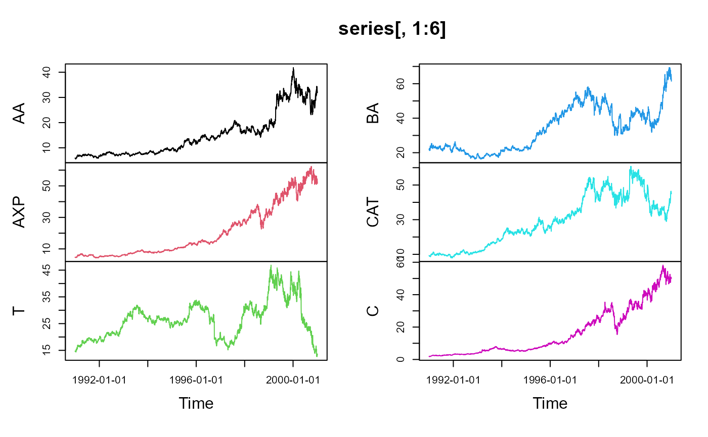

fBasics data sets
data-examples.RdThe following data sets are part of this package:
Capitalization | Market capitalization of domestic companies, |
cars2 | Data for various car models, |
DowJones30 | Down Jones 30 stocks, |
HedgeFund | Hennessee Hedge Fund Indices, |
msft.dat | Daily Microsoft OHLC prices and volume, |
nyse | NYSE composite Index, |
PensionFund | Swiss Pension Fund LPP-2005, |
swissEconomy | Swiss Economic Data, |
SWXLP | Swiss Pension Fund LPP-2000, |
usdthb | Tick data of USD to THB. |
Details
All datasets are data frames. A brief description is given below.
Capitalization:Capitalization
contains market capitalization of 13 domestic companies for 6 years
(from 2003 to 2008) in USD millions. Each row contains the data for
one company/stock exchange.
cars2:cars2
contains columns rowNames (model), Price,
Country, Reliability, Mileage, (Type),
(Weight), Disp. (engine displacement) and HP
(net horsepower) reprsenting the indicated properties of 60 car
models.
DowJones30:DowJones30
contains 2529 daily observations from the ‘Dow Jones 30’ Index
series. The first row contains the dates (from 1990-12-31 to
2001-01-02). Each of the remaining thirty columns represents the
closing price of a stock in the Index.
HedgeFund:HedgeFund
contains monthly percentage returns of 16 hedge fund strategies from
Hennessee Group LLC for year 2005.
msft.dat:msft.dat
contains daily prices (open, high, low and close) and volumes for the
Microsoft stocks. It is a data frame with column names
"%Y-%m-%d", "Open", "High", "Low",
"Close", "Volume".
Note: there is a dataset, MSFT, in package
timeSeries which contains the same data but is of class
"timeSeries".
nyse:nyse
contains daily records of the NYSE Composite Index from 1966-01-04 to
2002-12-31 (9311 observations). The data is in column "NYSE"
(second column). The first column contains the dates.
PensionFund:PensionFund
is a daily data set of the Swiss pension fund benchmark LPP-2005.
The data set ranges from 2005-11-01 to 2007-04-11.
The columns are named: SBI, SPI, SII, LMI, MPI, ALT, LPP25, LPP40, LPP60.
swissEconomy:swissEconomy
contains the GDP per capita (GDPR), exports (EXPO),
imports (IMPO), interest rates (INTR), inflation
(INFL), unemployment (UNEM) and population (POPU)
foryears 1964 to 1999 for Switzerland.
SWXLP:SWXLP
is a daily data set of the Swiss pension fund benchmark LPP-2000. The
data set ranges from 2000-01-03 to 2007-05-08 (1917 observations). The
first column contains the dates. The remaining columns are named: SBI,
SPI, SII, LP25, LP40, LP60.
usdthb:usdthb
Tick data of US Dollar (USD) in Thailand Bhat (THB) collected from
Reuters. The date is in the first column in YYYYMMDDhhmm format. The
remaining columns contain: delay time (DELAY), contributor
(CONTRIBUTOR), bid (BID) and ask (ASK) prices,
and quality flag (FLAG). It covers the Asia FX crisis in June
1997.
References
Capitalization:
World Federation of Stock Exchanges,
http://www.world-exchanges.org/statistics.
cars2:
Derived from the car90 dataset within the rpart package.
The car90 dataset is based on the car.all dataset in S-PLUS.
Original data comes from:
April 1990, Consumer Reports Magazine,
pages 235-255, 281-285 and 287-288.
DowJones30
https://www.yahoo.com.
HedgeFund:
http://www.hennesseegroup.com/indices/returns/year/2005.html.
msft.dat:
https://www.yahoo.com.
nyse:
https://www.nyse.com.
PensionFund:
SBI, SPI, SII: SIX (Swiss Exchange Zurich);
LPP25, LPP40, LPP60: Banque Pictet Geneva;
LMI, MPI, ALT: Recalculated from the indices and benchmarks.
swissEconomy:
https://www.oecd.org/ and https://www.imf.org/.
SWXLP:
SBI, SPI, SII: SIX (Swiss Exchange Zurich);
LPP25, LPP40, LPP60: Banque Pictet Geneva.
usdthb:
Reuters Select Feed Terminal (1997).
Examples
## Plot DowJones30 Example Data Set
series <- timeSeries::as.timeSeries(DowJones30)
head(series)
#> GMT
#> AA AXP T BA CAT C KO DD EK XOM GE GM
#> 1990-12-31 5.92 4.70 14.67 21.77 9.30 1.87 9.88 13.15 23.02 12.09 4.63 19.72
#> 1991-01-02 5.92 4.70 14.67 21.77 9.30 1.87 9.88 13.15 23.02 12.09 4.63 19.72
#> 1991-01-03 5.88 4.73 14.73 21.71 9.15 1.87 9.60 12.83 22.95 12.15 4.53 19.57
#> 1991-01-04 5.76 4.73 14.79 22.50 9.00 1.92 9.85 13.06 22.74 12.27 4.47 19.00
#> 1991-01-07 5.72 4.58 14.67 21.65 8.87 1.89 9.69 12.83 22.11 12.12 4.40 18.35
#> 1991-01-08 5.63 4.53 14.73 21.34 9.05 1.85 9.60 12.60 22.18 12.09 4.44 18.28
#> HWP HD HON INTC IBM IP JPM JNJ MCD MRK MSFT MMM
#> 1990-12-31 3.91 2.80 5.70 1.20 27.86 20.45 2.67 7.31 7.08 11.83 2.08 31.41
#> 1991-01-02 3.91 2.80 5.70 1.20 27.86 20.45 2.67 7.31 7.08 11.83 2.08 31.41
#> 1991-01-03 3.91 2.74 5.67 1.20 27.95 20.21 2.67 7.23 6.99 11.45 2.09 30.90
#> 1991-01-04 3.85 2.75 5.65 1.20 27.86 20.50 2.69 7.18 7.02 11.27 2.11 30.80
#> 1991-01-07 3.88 2.65 5.50 1.19 27.39 20.45 2.58 6.96 6.80 10.97 2.08 30.43
#> 1991-01-08 3.90 2.59 5.47 1.18 27.08 20.26 2.58 7.02 6.83 11.01 2.04 29.65
#> MO PG SBC UTX WMT DIS
#> 1990-12-31 10.55 20.91 9.75 9.31 7.05 7.86
#> 1991-01-02 10.55 20.91 9.75 9.31 7.05 7.86
#> 1991-01-03 10.27 20.70 9.64 9.19 7.05 7.82
#> 1991-01-04 10.24 20.48 9.56 9.24 6.97 7.79
#> 1991-01-07 10.08 20.05 9.40 8.95 6.82 7.58
#> 1991-01-08 10.11 20.02 9.32 8.78 6.85 7.41
plot(series[,1:6], type = "l")

## msft.dat contains (almost?) the same data as MSFT in package timeSeries
data(MSFT, package = "timeSeries")
m1 <- as.matrix(msft.dat[, -1]) # drop date stamps in column 1
m2 <- as.matrix(MSFT)
all.equal(m1, m2, check.attributes = FALSE) # TRUE
#> [1] TRUE
## compare the dates:
all.equal(format(msft.dat[ , 1]), format(time(MSFT))) # TRUE
#> [1] TRUE